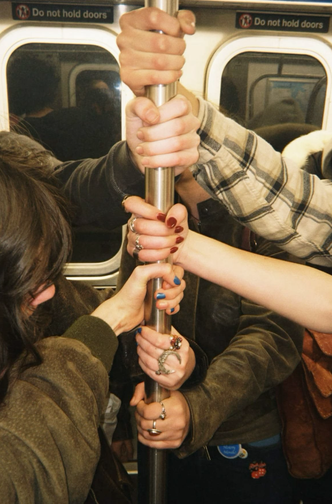
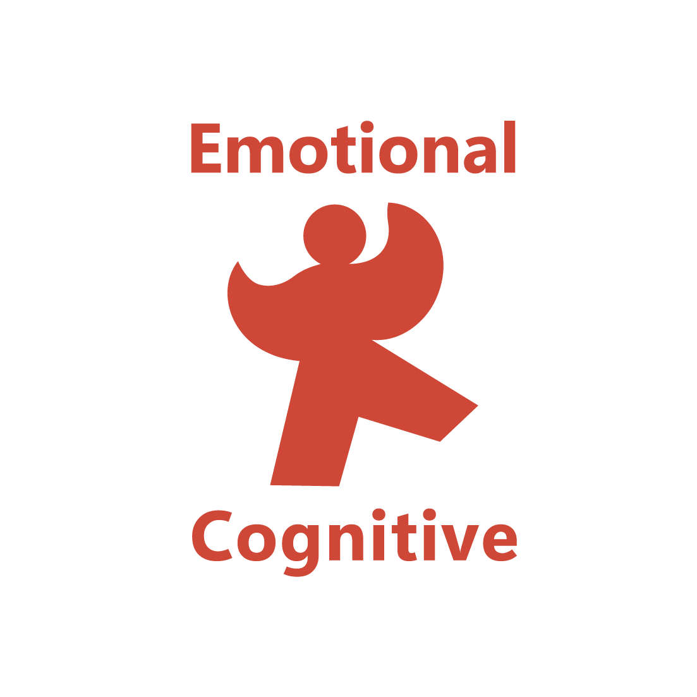
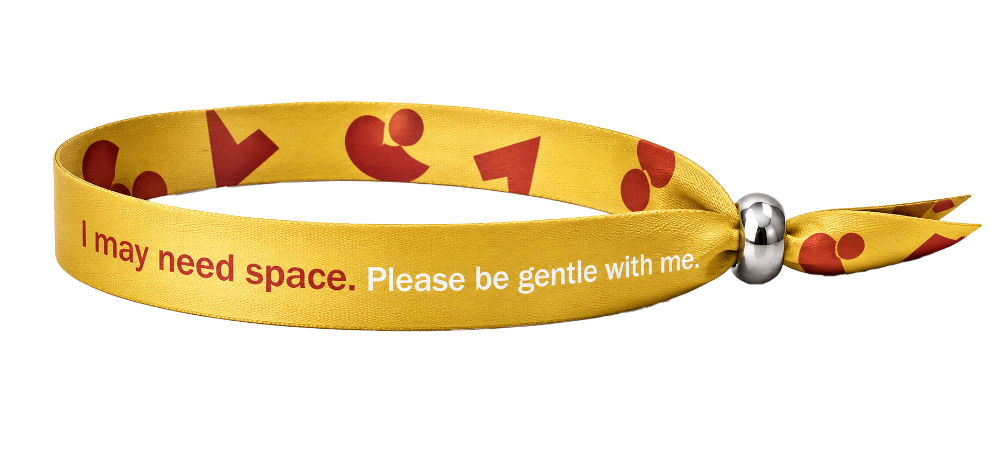
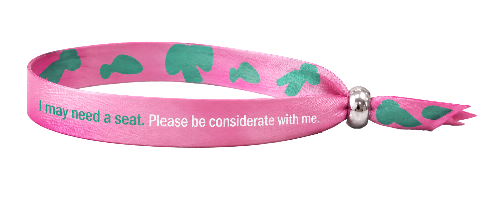
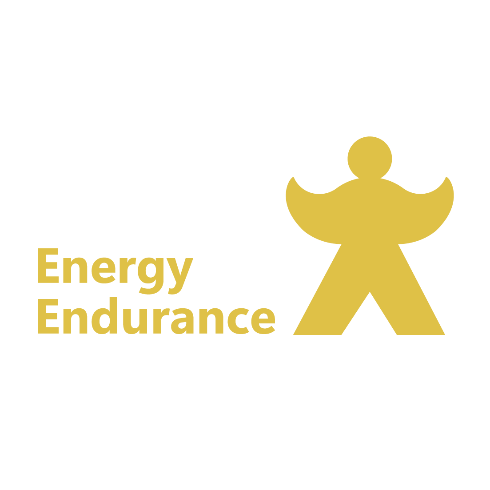
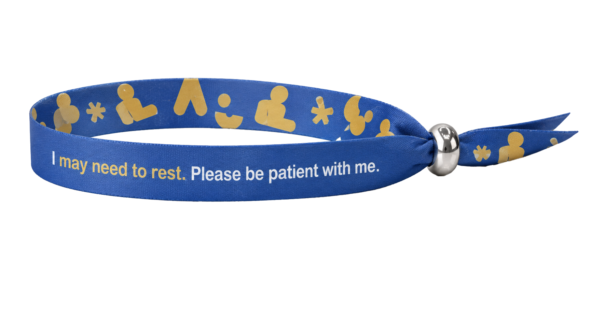

A WAY TO
SEE
SHOW
YOUR NEEDS
A way to show needs without
defining people.
These categories reflect temporary situations, feelings, and invisible conditions that many of us may experience.
These terms describe contexts of need, not labels of identity.

Overstimulated
Anxiety

Social
Discomfort
Discomfort
Sensory
Sensitivity
Sensitivity
Psychological
Distress
Please be gentle with me.
I may need space.
I may need quiet.
I'm feeling overwhelmed.


Chronic
Pain
Pain
Heart
Condition
Condition
Surgery
Recovery
Recovery

Menstrual
Pain
Pain
Early
Pregnancy
Pregnancy
Please be mindful
of my condition.
I may need a seat.
I may need assistance.
I'm managing a physical condition.


Chronic
fatigue
fatigue
Reduced
stamina
stamina
Burnout

Insomnia
Please be patient with me.
I may need to rest.
I may move slowly.
I'm easily fatigued.
